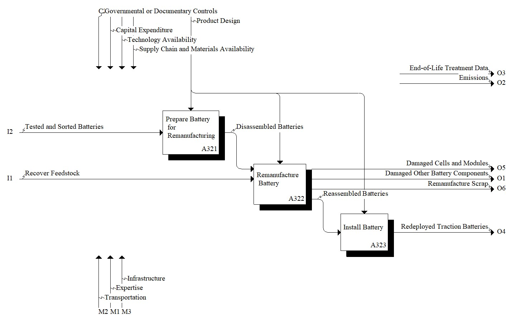

Model: Remanufacture

Description
Notes:None
Definitions:
Remanufacturing: industrial process by which an item is returned to a like-new condition from both a quality and performance perspective. From ISO 59004:2024
Standards/Best Practices/Regulations:
UL 1974, Evaluation for Repurposing or Remanufacturing Batteries
ISO 59004:2024, Circular economy - Vocabulary, principles and guidance for implementation
FMVSS No. 305a (Electric-Powered Vehicles)
References:
Casals LC, García BA, Cremades LV (2017) Electric vehicle battery reuse: Preparing for a second life. Journal of Industrial Engineering and Management, 10(2), 266-285. https://doi.org/10.3926/jiem.2009
Foster M, Isely P, Standridge CR, Hasan MM (2014) Feasibility assessment of remanufacturing, repurposing, and recycling of end of vehicle application lithium-ion batteries. Journal of Industrial Engineering and Management, 7(3), 698-715. https://doi.org/10.3926/jiem.939
Groenewald J, Marco J, Higgins N, Barai A (2016) In-service EV battery life extension through feasible remanufacturing (No. 2016-01-1290). SAE Technical Paper. https://doi.org/10.4271/2016-01-1290
Kamath D, Moore S, Arsenault R, Anctil A (2023) A system dynamics model for end-of-life management of electric vehicle batteries in the US: Comparing the cost, carbon, and material requirements of remanufacturing and recycling. Resources, Conservation and Recycling, 196, 107061. https://doi.org/10.1016/j.resconrec.2023.107061
Montes T, Etxandi-Santolaya M, Eichman J, Ferreira VJ, Trilla L, Corchero C (2022) Procedure for Assessing the Suitability of Battery Second Life Applications After EV First Life. Batteries, 8(9), 122. https://doi.org/10.3390/batteries8090122
Remanufacturing: industrial process by which an item is returned to a like-new condition from both a quality and performance perspective. From ISO 59004:2024
Standards:
UL 1974, Evaluation for Repurposing or Remanufacturing Batteries
ISO 59004:2024, Circular economy - Vocabulary, principles and guidance for implementation
References:
Casals LC, García BA, Cremades LV (2017) Electric vehicle battery reuse: Preparing for a second life. Journal of Industrial Engineering and Management, 10(2), 266-285. https://doi.org/10.3926/jiem.2009
Foster M, Isely P, Standridge CR, Hasan MM (2014) Feasibility assessment of remanufacturing, repurposing, and recycling of end of vehicle application lithium-ion batteries. Journal of Industrial Engineering and Management, 7(3), 698-715. https://doi.org/10.3926/jiem.939
Groenewald J, Marco J, Higgins N, Barai A (2016) In-service EV battery life extension through feasible remanufacturing (No. 2016-01-1290). SAE Technical Paper. https://doi.org/10.4271/2016-01-1290
Kamath D, Moore S, Arsenault R, Anctil A (2023) A system dynamics model for end-of-life management of electric vehicle batteries in the US: Comparing the cost, carbon, and material requirements of remanufacturing and recycling. Resources, Conservation and Recycling, 196, 107061. https://doi.org/10.1016/j.resconrec.2023.107061
Montes T, Etxandi-Santolaya M, Eichman J, Ferreira VJ, Trilla L, Corchero C (2022) Procedure for Assessing the Suitability of Battery Second Life Applications After EV First Life. Batteries, 8(9), 122. https://doi.org/10.3390/batteries8090122
Parent Activity: Remanufacture
Disclaimer: Certain commercial equipment, instruments, or materials are identified in this documentation to foster understanding. Such identification does not imply recommendation or endorsement by the National Institute of Standards and Technology, nor does it imply that the materials or equipment identified are necessarily the best available for the purpose.